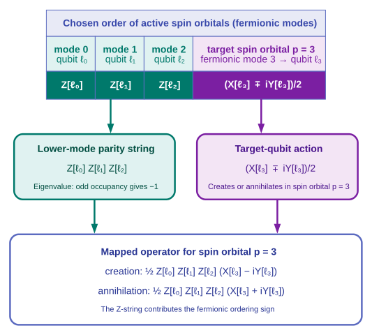

Mapping the problem to qubits#
Chapter focus
How does the active-space electronic problem become a qubit problem?
Learning objectives#
After completing this chapter, you will be able to:
Identify the terms in the active-space electronic Hamiltonian.
Explain why fermionic operators require an encoding on qubits.
Describe how the Jordan–Wigner transformation preserves fermionic signs.
Construct a qubit Hamiltonian with native QDK/Chemistry tools.
Determine how many qubits encode the selected active-space fermionic state.
Explain why the core energy must be added to a qubit-Hamiltonian result.
Lab notebook assignment
Complete Qubit representation. Calculate the number of qubits needed to encode the selected active-space fermionic state before verifying it with code. Record the core energy separately and identify every quantity excluded from this qubit count.
Example files#
Add tutorial_map_n2_to_qubits.py to your tutorial working folder.
Open the new file in Visual Studio Code and review the complete mapping script, including imports and setup code omitted from the excerpts below.
The script imports the tested Choosing the active space workflow so that both lessons use the same selected active space.
The active-space Hamiltonian#
Choosing the active space partitioned the molecular orbitals into inactive, active, and virtual spaces. As introduced in Orbitals and determinants, each spin orbital combines a spatial orbital with an \(\alpha\) or \(\beta\) spin function. Occupations may vary among the active spin orbitals in the correlated wavefunction, while inactive spatial orbitals remain doubly occupied and virtual spatial orbitals remain empty. The active-space Hamiltonian acts only on the active spin orbitals; interactions with frozen inactive orbitals contribute to its effective one-electron terms and to the separately calculated core energy, a scalar containing the nuclear repulsion and constant frozen-orbital contributions. Written in second quantization, this Hamiltonian uses operators that change orbital occupations. The creation operator \(\hat{a}_p^\dagger\) adds an electron to spin orbital \(p\), while the annihilation operator \(\hat{a}_p\) removes one. The Hamiltonian contains one-electron and two-electron terms:
The indices \(p,q,r,s\) label active spin orbitals, or equivalently fermionic modes. The coefficients \(h_{pq}\) describe one-electron effects, including kinetic energy, attraction to the nuclei, and the effective interaction with frozen inactive electrons. The coefficients \(g_{pqrs}\) describe electron–electron repulsion among the active spin orbitals.
The creation and annihilation operators automatically produce zero when creation acts on an already occupied spin orbital or annihilation acts on an unoccupied one. Together, these operators connect the Slater determinants introduced in Orbitals and determinants that can contribute to the active-space wavefunction.
The mapping script reconstructs this selected active-space Hamiltonian from the orbitals produced by Choosing the active space:
selected_orbitals = active_space_result.refined_orbitals
hamiltonian_constructor = create("hamiltonian_constructor", "qdk")
active_hamiltonian = hamiltonian_constructor.run(selected_orbitals)
# Nuclear repulsion and frozen inactive-orbital contributions stay outside
# the mapped active Hamiltonian as one separately stored scalar.
core_energy = active_hamiltonian.get_core_energy()
Why orbital occupations are not enough#
The operator products in the active-space Hamiltonian act on Slater determinants. For example, in the one-electron term \(\hat{a}_p^\dagger\hat{a}_q\), the rightmost operator first removes an electron from spin orbital \(q\), and then the leftmost operator places it in spin orbital \(p\). The two-electron terms describe corresponding changes involving two electrons. The orbital occupations determine whether such a change is allowed. When it is allowed, restoring the resulting determinant to the chosen standard orbital order can introduce a minus sign.
Both this ordering sign and the exchange effect discussed in Describing the molecule follow from the antisymmetry of fermionic wavefunctions. Applying the Hamiltonian’s operators in a different order can therefore change the sign of the resulting contribution. These signs are already part of the electronic-structure problem; mapping the Hamiltonian to qubits must preserve them.
As the tutorial introduction explains, a qubit can store whether one spin orbital is unoccupied or occupied. That records the orbital occupations, but operations acting on different qubits commute and therefore do not automatically reproduce fermionic signs. Simply replacing each creation or annihilation operator with an operation on its corresponding qubit would change the Hamiltonian’s matrix elements. A fermion-to-qubit mapping must represent both the occupations and the signs caused by fermionic operator ordering.
Optional: the sign rule in symbols
The anticommutation relations summarize this sign rule compactly. With the anticommutator defined as \(\{\hat{A},\hat{B}\}=\hat{A}\hat{B}+\hat{B}\hat{A}\), fermionic creation and annihilation operators satisfy
For different spin orbitals, the zero on the right means that exchanging the order of two operators changes the sign of the result. You will not need to manipulate these relations by hand; the Jordan–Wigner transformation enforces them through the parity strings introduced next.
The Jordan–Wigner transformation#
The Jordan–Wigner transformation [JW28] assigns each fermionic mode to one qubit. In this molecular problem, each fermionic mode is one active spin orbital. To keep the two kinds of labels distinct, let \(\ell_p\) denote the qubit assigned to fermionic mode \(p\); its numerical qubit index is \(p\).
The occupation operator becomes
The creation and annihilation operators become
The Pauli operators \(X_{\ell_p}\), \(Y_{\ell_p}\), and \(Z_{\ell_p}\) act on qubit \(\ell_p\). The combinations \((X_{\ell_p}-iY_{\ell_p})/2\) and \((X_{\ell_p}+iY_{\ell_p})/2\) raise \(\vert 0\rangle_{\ell_p}\) to \(\vert 1\rangle_{\ell_p}\) and lower \(\vert 1\rangle_{\ell_p}\) to \(\vert 0\rangle_{\ell_p}\), respectively. Within the product, \(j\) indexes the lower fermionic modes and \(Z_{\ell_j}\) acts on the qubit assigned to mode \(j\). The product of \(Z\) operators records the parity of occupied lower-indexed modes. Each occupied lower-indexed mode contributes an eigenvalue of \(-1\), so the product is negative when an odd number of those modes is occupied. Acting on mode \(p\) crosses the occupied lower-indexed modes in the chosen fermionic ordering, with each crossing contributing a minus sign. The parity string supplies their combined sign, so the mapped operators satisfy the fermionic anticommutation relations.

A fermionic mode is one active spin orbital. For target spin orbital \(p=3\), the qubits assigned to preceding spin orbitals supply the parity string \(Z_{\ell_0}Z_{\ell_1}Z_{\ell_2}\), while qubit \(\ell_3\) changes the target occupation. The same pattern extends to any target \(p\).#
Because the parity strings depend on mode ordering, the ordering must be specified: QDK/Chemistry places all active \(\alpha\) modes before all active \(\beta\) modes, a convention called blocked ordering.
Why does Jordan–Wigner need a string of Pauli Z operators?
The \(Z\) string records the parity of lower-indexed fermionic modes. Its sign ensures that encoded creation and annihilation operators anticommute even though operators on different qubits commute.
Qubits for the encoded fermionic state#
The compute register introduced in the tutorial overview stores the encoded active-space fermionic state. A qubit in this register is a compute-register qubit, shortened below to compute qubit. Every spatial orbital corresponds to one \(\alpha\) spin orbital and one \(\beta\) spin orbital. For \(n_o\) active spatial orbitals, Jordan–Wigner therefore requires
Calculate the compute-register count from the active space selected in Choosing the active space before running the script:
Because this restricted calculation has matching \(\alpha\) and \(\beta\) active spaces, the code reads the \(\alpha\)-channel entries directly, one for each active spatial orbital.
# Count one spin channel to obtain spatial orbitals, then include both spins.
alpha_channel = SymmetryLabel([axes.alpha()])
num_active_spatial_orbitals = len(
selected_orbitals.active_indices().indices(alpha_channel)
)
num_active_spin_orbitals = 2 * num_active_spatial_orbitals
Its size does not include phase-estimation ancillas, temporary workspace qubits, error-correction overhead, or physical qubits. Those additional resources depend on later algorithm and hardware choices rather than on the Jordan–Wigner occupation encoding alone.
How many compute qubits does the selected active space require?
The selected space contains six active spatial orbitals and therefore twelve active spin orbitals. Jordan–Wigner uses one qubit per spin orbital, so the compute register contains twelve qubits.
Record your predicted compute-register qubit count and the excluded qubit categories in the qubit-representation section of the lab notebook before continuing. You will verify the count when you run the mapping script.
How does adding one active spatial orbital change the compute-qubit count?
Each added spatial orbital contributes one \(\alpha\) and one \(\beta\) spin orbital. Jordan–Wigner therefore requires two additional compute qubits. This change does not include algorithm ancillas or error-correction overhead.
Qubit Hamiltonian in Pauli form#
Substituting the Jordan–Wigner expressions into \(\hat{H}_{\mathrm{active}}\) produces a weighted sum of Pauli strings:
where coefficient \(c_k\) multiplies a tensor product \(P_k\) of \(I\), \(X\), \(Y\), and \(Z\) operators. The index \(k\) labels Pauli terms, not spin orbitals or qubits. The number of Pauli terms describes the size of this operator representation; it is not a logical gate count or a physical-resource estimate. The exact count also depends on the mapper’s numerical thresholds because terms with sufficiently small coefficients are omitted.
The script creates a Jordan–Wigner mapping for the active spin orbitals and passes it to the native QDK/Chemistry mapper:
mapping = MajoranaMapping.jordan_wigner(num_modes=num_active_spin_orbitals)
qubit_mapper = create(
"qubit_mapper",
"qdk",
threshold=1e-10,
integral_threshold=1e-14,
)
qubit_hamiltonian = qubit_mapper.run(active_hamiltonian, mapping)
# The mapper returns a weighted Pauli sum whose string length is the
# compute-register size.
num_compute_qubits = qubit_hamiltonian.num_qubits
num_pauli_terms = len(qubit_hamiltonian.pauli_strings)
print_representative_pauli_terms(qubit_hamiltonian)
The Pauli terms fall into families that connect back to the determinant picture:
- All-identity term
Acts in the same way on every occupation-basis state and therefore contributes a constant shift to every eigenvalue of the active Hamiltonian. This mapped constant is distinct from the core energy stored outside the qubit Hamiltonian.
- \(I\)- and \(Z\)-only terms
Are diagonal in the occupation-number basis because each determinant is an eigenstate of every \(Z\) operator. Their signs depend on which spin orbitals are occupied, so together they contribute occupation-dependent one-electron and electron-interaction energies to the diagonal matrix element of each determinant.
- Terms containing \(X\) or \(Y\)
Are off-diagonal in the occupation-number basis and connect basis states with different orbital occupations, corresponding to couplings among Slater determinants. A complete mapped hopping or excitation operator generally contains a coordinated sum of several Pauli strings, so one displayed string should not be interpreted as an entire chemical excitation by itself.
Printing every Pauli term would obscure these patterns, so the complete script displays the all-identity term, three of the largest \(I\)- and \(Z\)-only terms, and four of the largest terms containing \(X\) or \(Y\).
The preview writes, for example, X(qubit 1) X(qubit 2) X(qubit 5) X(qubit 6) for a tensor product that applies \(X\) to qubits 1, 2, 5, and 6 and applies \(I\) to every unlisted qubit.
Core-energy bookkeeping#
The selected-space energy from Choosing the active space contains a constant contribution in addition to the active Hamiltonian:
QDK/Chemistry stores nuclear repulsion and the constant contribution from frozen inactive orbitals in \(E_{\mathrm{core}}\). The qubit mapper transforms \(\hat{H}_{\mathrm{active}}\) but does not include \(E_{\mathrm{core}}\) in the returned qubit operator. This scalar must therefore be added to the measured active-space eigenvalue to reconstruct the selected-space total energy.
Why must the core energy be added to the energy from the qubit Hamiltonian?
The qubit mapper encodes only the active fermionic Hamiltonian. Nuclear repulsion and constant frozen-orbital contributions are stored separately in the core energy, so adding that scalar reconstructs the selected-space total energy.
The fixed-electron-number sector in this teaching example is small enough to validate the mapping by exact matrix diagonalization.
A fixed-electron-number subspace contains only the occupation-basis states with specified numbers \(n_\alpha\) and \(n_\beta\) of active \(\alpha\) and \(\beta\) electrons. The script restricts \(\hat{H}_{\mathrm{qubit}}\) to the fixed-electron-number subspace with the same electron counts as the CASCI calculation. Before running the script, use the determinant-count formula from the active-space calculation to calculate the number of occupation-basis states in this subspace as \(\binom{n_o}{n_\alpha}\binom{n_o}{n_\beta}\), and record your prediction in the qubit-representation section of the lab notebook. In the integer label for an occupation-basis state, bit \(p\) records the occupation of mode \(p\), with qubit 0 as the least-significant bit. Blocked ordering therefore places the \(n_o\) active \(\alpha\) occupations in the lowest bits and the \(n_o\) active \(\beta\) occupations in the next bits; the mask in the code isolates the \(\alpha\) occupations so the two electron counts can be checked separately. The lowest eigenvalue in this subspace is obtained directly from the mapped qubit Hamiltonian:
num_alpha, num_beta = (
active_space_result.refined_wavefunction.get_active_num_electrons()
)
# QDK/Chemistry's blocked fermion ordering stores alpha occupations in the
# low bits and beta occupations in the high bits. Shifting 1 left and
# subtracting 1 creates a mask with one low bit per alpha spin orbital.
alpha_mask = (1 << num_active_spatial_orbitals) - 1
# Enumerate all compute-register bit strings, then keep only states with the
# required numbers of set alpha and beta occupation bits.
fixed_electron_basis_indices = [
state
for state in range(1 << num_compute_qubits)
if (state & alpha_mask).bit_count() == num_alpha
and (state >> num_active_spatial_orbitals).bit_count() == num_beta
]
# Construct the full operator sparsely, extract the physical sector, and
# densify only that compact matrix for exact diagonalization.
qubit_matrix = qubit_hamiltonian.to_matrix(sparse=True)
fixed_electron_matrix = qubit_matrix[fixed_electron_basis_indices][
:, fixed_electron_basis_indices
].toarray()
mapped_active_energy = float(np.linalg.eigvalsh(fixed_electron_matrix)[0])
mapped_total_energy = core_energy + mapped_active_energy
mapping_energy_difference = mapped_total_energy - active_space_result.refined_energy
Adding \(E_{\mathrm{core}}\) to this mapped active-space eigenvalue gives a total energy that can be compared with the selected-space CASCI reference. The script constructs the full qubit matrix sparsely and densifies only the fixed-electron-number sector for exact diagonalization. This selected-sector validation is practical for the compact teaching example; it is not a scalable method for solving larger qubit Hamiltonians.
Running the mapping#
With the Python environment from Before you begin active, run the complete script from the Visual Studio Code integrated terminal:
python tutorial_map_n2_to_qubits.py
Does the script confirm the size of the fixed-electron-number subspace?
The subspace with three active \(\alpha\) and three active \(\beta\) electrons contains \(\binom{6}{3}\binom{6}{3}=400\) occupation-basis states, matching the 400 determinants in the selected active space.
What operator size and core energy does the script report?
The mapped Hamiltonian contains 247 Pauli terms on twelve compute qubits. The separately stored core energy is approximately \(-99.117775726922\) Hartree. The script retains Pauli coefficients of magnitude at least \(10^{-10}\) Hartree after constructing the mapping with a tighter integral threshold.
Does the mapped qubit Hamiltonian reproduce the selected-space algorithmic reference?
Yes. The mapped active-space ground-state energy plus the separately stored core energy reproduces the selected-space CASCI reference with a validation difference indistinguishable from zero at the displayed precision. The script reports the component energies and their full-precision validation difference for the lab notebook.
This agreement validates the Jordan–Wigner mapping and fixed-electron-number subspace construction for this selected Hamiltonian within numerical precision. Compare the reported qubit count with your prediction, then complete the qubit-representation section of the lab notebook with the encoding, confirmed orbital and qubit counts, Pauli-term count, fixed-electron-number subspace, mapped energy, reconstructed total, and comparison with the selected-space reference.